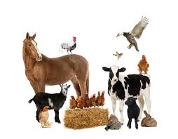
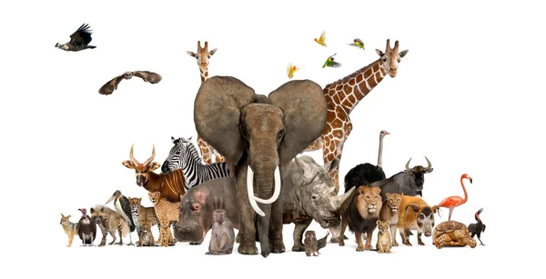

Introducción
Animales Domésticos

- Los animales domésticos son animales que viven con las personas.
- Necesitan cuidados y protección.
- Las personas se encargan de darles comida, agua y un lugar para vivir.
- Estos animales pueden vivir en casas o en granjas.
- No suelen vivir solos en la naturaleza.
- Ejemplos: gato, perro, conejo, vaca, cerdo ...
Animales Salvajes

- Los animales salvajes son animales que viven en la naturaleza.
- No viven con las personas.
- Buscan solos su comida y su refugio.
- Estos animales viven en bosques, selvas, ríos, mares o desiertos.
- Saben cuidarse por sí mismos.
- Ejemplos: león, elefante, tigre, jirafa, cocodrilo ...
Dudas
Si tienes alguna duda, pregunta a la profe Ana